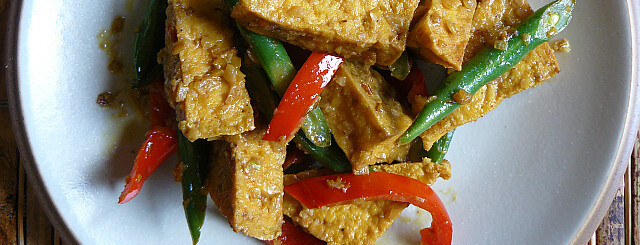

Nutritious Recipes
Tofu Stir Fry
Prep Time: 10 min
Cook Time: 15 min
- 1 block of firm tofu, cubed
- 1 red bell pepper, sliced
- 1 bag of frozen green beans
- 3 tbsp of soy sauce
- 1 tbsp of garlic powder
Step 1: Slice the bell pepper and cube the tofu.
Step 2: Coat the tofu in soy sauce and place into air fryer for 7 minutes at about 375 degrees. If you don't have an air fryer, just use the same sauce pan we will have for the next few steps.
Step 3: Throw the fried tofu, bell pepper, frozen green beans, soy sauce and garlic powder into a wok or sauce pan. Saute for about 15 minutes or until the vegetables look cooked thoroughly.
Step 4: Serve! With sticky rice if you prefer.
Black Bean Chili
Prep Time: 2 min
Cook Time: 30 min
- 1 can of black beans
- 1/2 bag of frozen sweet yellow corn
- 1 large tomato, chopped
- 2 tsp of cumin
- 1 tsp of salt
- 1 tsp of onion powder
- optional: 2 tbsp of olive oil
- optional: 1/2 sweet potato, cubed
Step 1: Prep the tomato and sweet potato by chopping them into 1/2 inch by 1/2 inch cubes.
Step 2: Add beans, corn, tomato, cumin, salt, and onion powder to large pot and let simmier on medium for about 20 minutes.
Step 3: While that's cooking, coat the cubed sweet potato in the olive oil and another dash of onion powder. Then place it into a air fryer for about 12 minutes at 400 degrees. If you don't have an air fryer, you can also roast it in the oven on a baking sheet covered in parchment paper.
Step 4: Mix the sweet potato into the chili and cook all together for another 10 minutes.
Step 5: Serve! You might want to top it with sour cream or half an avocado.
Mixed Berry Crumble
Prep Time: 5 min
Cook Time: 70 min
- 1 bag of frozen mixed berries
- 1 cup of brown sugar
- 1/2 cup of rolled oats
- 1/2 cup of flour
- 1 tsp of cinnamon
- 1 tsp of nutmeg
- optional: vanilla ice cream
Step 1: If you choose to use apples or some other fruit instead of mixed berries, chop that first into slices or small cubes.
Step 2: Add all your fruit and 1/2 cup of brown sugar to a pot along with a splash of water. Cook on low for 30-40 minutes on low, stirring consistently. You want to achieve a jam-like texture before moving on.
Step 3: While your fruit is cooking, combine the rest of the brown sugar, rolled oats, flour, cinnamon and nutmeg in a bowl. Fold together until you have a crumble like consistency.
Step 4: Take the fruit off the stove and pour into a baking dish. Cover fruit mixture with crumble. Bake for 20 minutes at 350 degrees.
Step 5: Remove from oven and let sit for 10-15 minutes. Serve with vanilla ice cream.